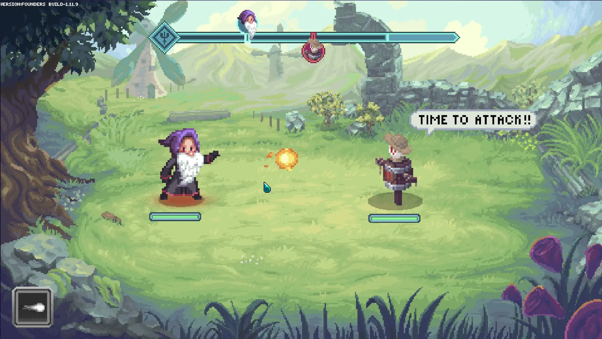
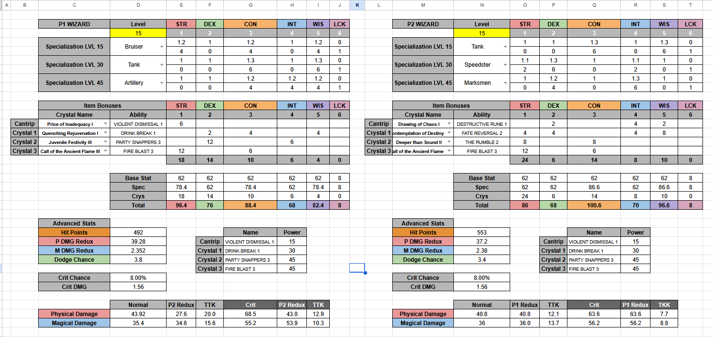

Context
As part of designing and delivering formulas for Forgotten Runiverse's turn-based combat, there were a lot of variables to take into account. We wanted a combat system with depth that could be tied to several avenues of player crafting and exploration. Player characters could be equipped with a wide variety of weapons, armor, and jewels that altered their roles and abilities in combat.
Problem
The skeleton of the battle system was implemented with simple formulas, but combat had many interconnected variables — six core stats feeding secondary attributes, equipment with RNG, elemental damage types — and the team had no way to trace how a change in one place rippled through the rest. Adjusting a stat coefficient or weapon value could quietly break balance elsewhere, and without a way to visualize those relationships, tuning was essentially guesswork. With a beta test approaching, the team needed to deliver a reasonably balanced build grounded in data, not gut feel.
Goal
Create a framework that made the system's relationships visible and testable, so the team could tune with confidence, catch cascading balance issues early, and deliver a playable beta.
Solution
RPG combat systems have a lot of moving parts. Initially there can seem to be a lot of chicken-and-egg issues, but as with many other design problems, complexity is something you can add as you iterate. I decided to start with combat flow and build item generation second.
The 6 character statistics or attributes were already decided on: Strength, Dexterity, Intelligence, Constitution, Wisdom, and Luck. I established the characters' base values and initial secondary attributes. Secondary Attributes (in this case) were all character values that had a stat precursor like Health Points from Constitution or Dodge Chance from Dexterity.
With the basic relationships established and a simple Fire attack, I ran a pen-and-paper simulation of a battle to dig deeper into how the formulas needed to behave.
Scenario: Player 1 attacks Player 2 with a Fire attack with a power of 100. Both players have 20 points in every stat, but 5 points in Luck. They both have 500 health points.
| Question | Answer | Potential Damage |
|---|---|---|
| What is the Power of the Fire attack? | Base attack power. | 100 |
| Fire is magic — does Intelligence affect Fire damage? | Yes, 1 point every 2 Intelligence (+10). | 110 |
| Does equipment affect Fire damage? | Yes, Player 1 has a 5% bonus. | 115.5 |
| Does Player 2 have Fire resistance? | Yes, 1% per 10 Wisdom points (-2). | 113.19 |
| Can the player land a Critical Hit? How much Critical Damage? | Yes, 1% per point in Luck (5%). +40% critical damage. | 113.19 | 158.47 |
| Can Player 1 miss? | Yes, attacks have an accuracy value — let's say 85%. | — |
| Can Player 2 dodge? | Yes, 1% for every 5 points in Dexterity (4%). | — |
Iterating over these questions while adding conditionals and situations is what eventually led to concrete formulas. I worked closely with Tanilo Errazuriz throughout this process — discussing how stats should feed into damage, where complexity added meaningful depth versus just noise, and what the right relationships between progression and combat feel should be. I also took inspiration from Pokémon and Chrono Trigger math.
These early combat iterations revealed how much player power depended on equipment, which pointed me toward item generation as the next priority. Since the crafting system was still evolving, I needed a way to generate items quickly from our design rules without waiting on full implementation. I built a small Python solution that ingested the rules and delivered JSON files I could plug into the battle simulation and inject directly into game builds.
As I iterated, I used time-to-kill and combat duration as important lynchpins. Decisions on base values for progression also took into consideration how we were communicating change to the player — if the level-by-level change is too small, players don't see and feel their own progress.

As the system grew and new variables were introduced, the spreadsheet sim served as a sanity check. It made it easy to trace where values were coming from and catch balance issues before they compounded. The broader design team used the tools in their workflow and gave feedback that helped me refine how the spreadsheets presented information — for example, making it easier to see at a glance which stat relationships were driving a particular combat outcome.
Result
The spreadsheet prototype became the team's primary tool for tracing balance relationships and catching issues as the combat system expanded. The Python-to-JSON item generation pipeline kept content flowing into builds quickly while the underlying systems were still in flux. Together, they gave the team confidence going into beta with a playable, data-informed build rather than one tuned by instinct.